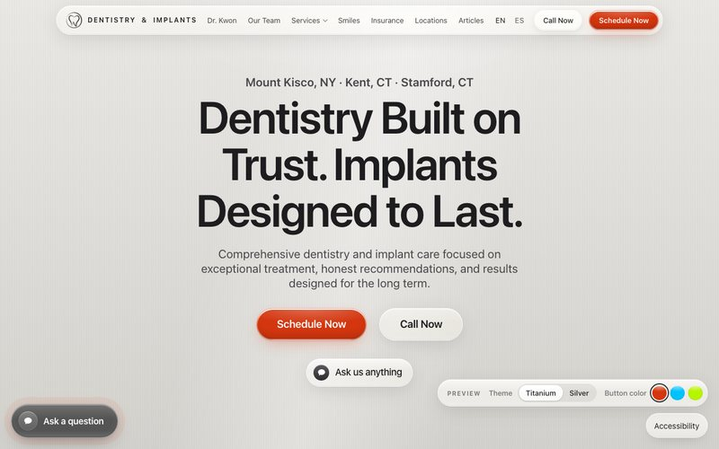

New
V2: Liquid Glass on Titanium, built from your feedback
Built on the Apple pages you liked: a light brushed titanium hero (or a cooler silver), clear liquid glass over the Mount Kisco office, same-day care and the complimentary consultation up front, the doctors right below, a more visible Ask a question chat, and a Schedule Now button you can try in three colors.